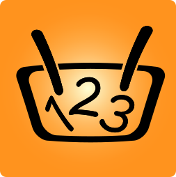
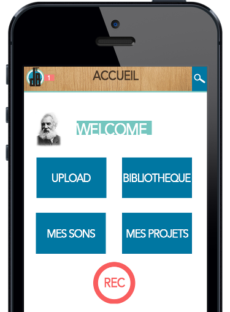
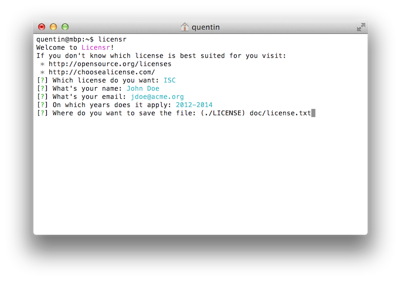
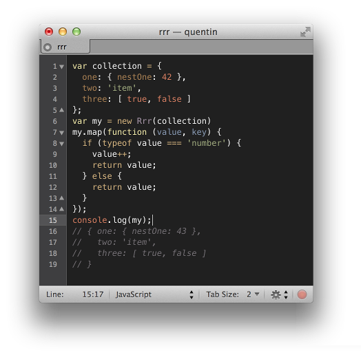
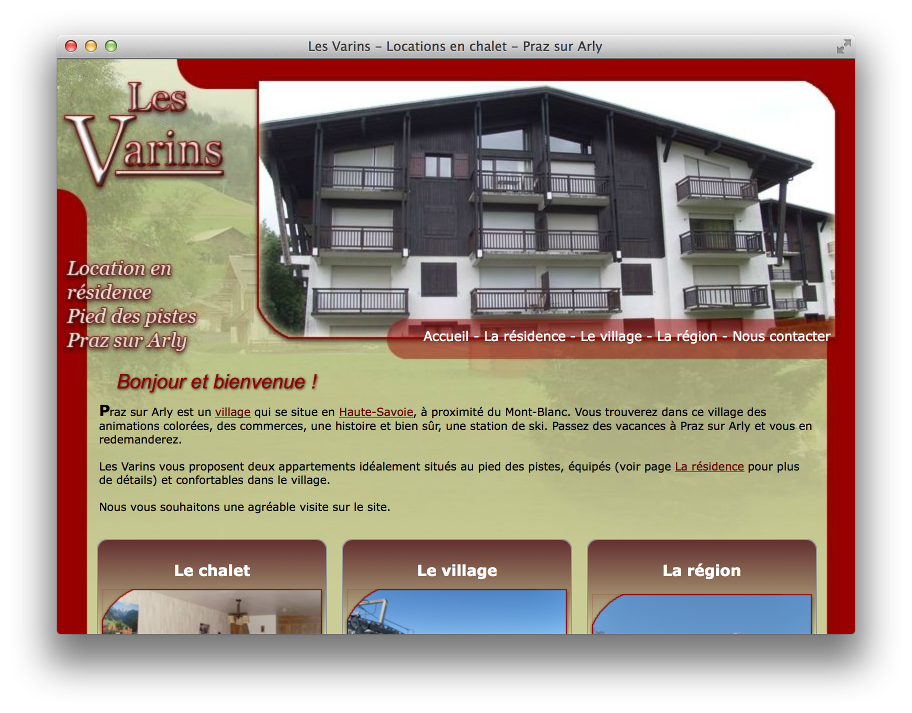

123 Courses is a collaborative platform that helps you
manage your shopping lists. Simply log in it, add contacts, create a
shopping list and share it. Now everybody in your house can add and check
the collaborative list in real-time.
- User Interface made with Google Material Design
- Optimized for 3G or slow networks (minification of assets)
- Front-end application build with AngularJS
- Android and iOS applications (early stages)
- Back-end build with Node.js, Express and Sails.js
- Secured with SSL. Resistant against CSRF and CORS attacks.
- Expose an HTTP API that is conform to the JSONAPI spec.
- Responds to WebSockets to do real-time applications.

dB Bar is a social network designed to make it easy to create music.
It allows musicians around the globe to communicate and to compose
remotely.
- The user interface that is displayed to the end-user adapts to the
size of the screen.
- Social network integration.
- A back-end HTTP API designed with industry standards like REST and
JSON.
- An authorization server to ensure security and extensibility of
the application. Conform with the OAuth 2.0 authorization
framework.
- A developer site that helps contributors and third-party
developers to interact with dB Bar.

Add an open-source license to your projects with a nice CLI tool!
- Super easy to use
- Fetch data from your
git install to avoid repeating
yourself
- Complete documentation
- API tested and 100% covered
- Designed to be integrated in other worklows

rrr is a JavaScript
library that will help you deal with nested objects. Those kind of objects
are very common (a NoSQL result, a JSON object or a XML tree). Working with
nested objects can be counter-intuitive because you have to create
recursive functions. rrr handles the recursion so you can
concentrate on your business logic.
- Perform recursion for you
- Simple yet powerful API
- Complete documentation
- Library tested and 100% covered
It is quite hard to install, update, configure and manage softwares for developing such as git, curl or php without spending hours in configuration and tests. Ruche is a multi-platform package manager. It’s designed to help developers to implement a clean and portable development environment.
- Install, update and remove softwares
- Quickly switch between versions of a software
- Portable development environment
- Can be used from an other software (API)

Showcase website for flats available for rent in the Alps.
- Template design
- Made with Adobe Flash technology
version-sort is a JavaScript library to sort an array (or
an object) of versions. It is sometimes hard to sort software versions
because there is a lot of naming conventions. version-sort
manage to sort the most common patterns.
- Simple yet powerful API
- Complete documentation
- Library tested and 100% covered
A Node.js wrapper for 7-Zip
- Map all 7-Zip commands into JavaScript functions
- Use asynchronous functions
- Handle 7-Zip errors
See a more complete list of my open-source work on my GitHub profile.